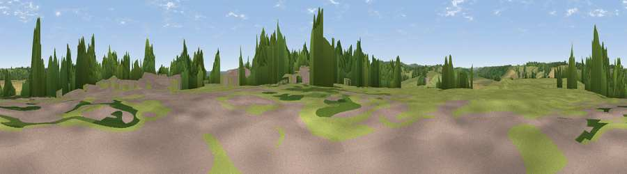

Viewpoint near Winchelsea
#35710 in England · top 36% of its area beats it · near Winchelsea · path 126 mWhere it is
The exact computed spot (TQ 90375 17425). Click the marker for map links.
Public access: the nearest public right of way is about 126 m away — the final stretch may cross private land. Computed from Natural England's CRoW access layer and OpenStreetMap rights of way — not the legal definitive map. Always verify locally.
The view, rendered

A 360° render of this exact spot computed from the terrain model, tree cover and land cover — summer colours, afternoon light, calibrated against photographs of famous viewpoints. Real trees, hedges and buildings will differ in detail.
The panorama
Grey silhouette: terrain skyline in each direction (720 bearings, Earth curvature and refraction included). Dashed green: skyline with trees (+15 m) and buildings (+8 m) as obstacles. Blue strip: how far the ground is visible on each bearing.
Where the view opens
Wedge length = distance to the farthest visible ground on that bearing (vegetation-aware). Rings at 10, 25 and 50 km.
What fills the view
56% grassland · 17% cropland · 13% woodland · 10% water · 2% built-up ·
Angular shares of the visible panorama (visual magnitude), not map area. Landscape diversity 0.55 (0–1 Shannon).
Key numbers
More beautiful places nearby
The staircase of upgrades: each row has a higher view potential than everything closer. Driving times are estimates from straight-line distance, calibrated against real road routing — check an actual route before setting out.
| Place | Direction | Drive | Score |
|---|---|---|---|
| The Look Out | E · 0 km | ~1 min | 47.2 |
| Viewpoint near Winchelsea | SW · 2 km | ~4 min | 58.9 |
| Viewpoint near Udimore | NNW · 2 km | ~6 min | 59.7 |
| Viewpoint near Fairlight | SW · 7 km | ~14 min | 75.1 |
| Viewpoint near Fairlight | SSW · 7 km | ~14 min | 78.2 |
| Viewpoint near Fairlight | SW · 8 km | ~15 min | 79.0 |
| Viewpoint near Willingdon | WSW · 36 km | ~54 min | 81.5 |
| Viewpoint near Willingdon | WSW · 36 km | ~54 min | 83.4 |
50.92487, 0.70745 · source: screening · position refined by local search. Computed location — check access rights before visiting.